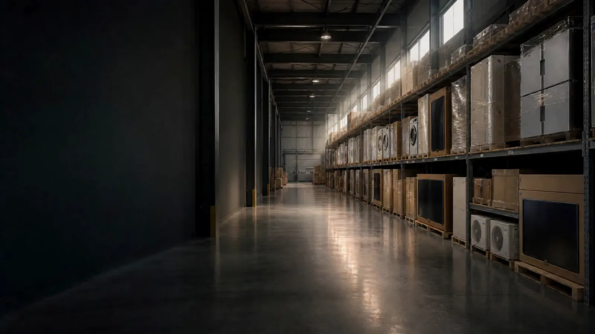

色・書体・置き方だけを変えています。文言と映像はそのままです。一番下が今のもの。
同業の最上位3社（SGムービング・三菱倉庫・鴻池運輸）のヒーローを実測して、その作法に合わせています。中央揃えは1社も無かったので外しました。

A案 明朝・左下
SGムービングと同じ組み方 明朝60px／行間1.28／字間ほぼ0。ラベルは白
B案 ゴシック・左下・大きく
鴻池・三菱に合わせた 太さ800／字間0／行間1.24。ボタンは枠付き
C案 明朝・左に縦線
明朝54px／行間1.42／左に細い縦線。和の落ち着き。ラベルは淡い錆色
いま これ
ゴシック太字／ラベルはオレンジ／ボタンに下線